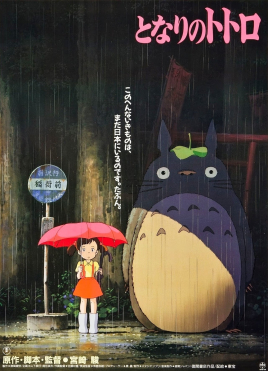
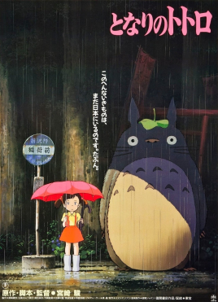

The first Japanese animation is often attributed to Jun'ichi Kōuchi, who created "Namakura Gatana" (An Obtuse Sword) in 1917. During the 1930s, animated shorts and feature films began to emerge, with works like "Katsudō Shashin" (Moving Picture) in 1907.
Namakura Gatana
Katsudo Gatana
Anime production during World War II was heavily influenced by government propaganda. "Momotaro, Umi no Shinpei" (Momotaro, Sacred Sailors) in 1945 is an example, featuring anthropomorphic animals promoting nationalistic values.
Osamu Tezuka, often called the "God of Manga," played a crucial role in shaping anime. His iconic work "Astro Boy" (Tetsuwan Atom) in 1963 marked the beginning of modern anime. The industry began to grow, and television became a popular medium for anime distribution.

The 1960s and 1970s saw the establishment of anime as a distinct art form. Shows like "Speed Racer" (Mach GoGoGo) and "Gigantor" (Tetsujin 28-go) gained popularity internationally. Tezuka's influence continued with series like "Black Jack" and "Princess Knight."

The 1980s witnessed the rise of mecha anime, with series like "Mobile Suit Gundam" (1979) and "Macross" (1982) setting new standards. Studio Ghibli, founded in 1985 by Hayao Miyazaki and Isao Takahata (Click on the photos for more information), produced acclaimed films such as "Nausicaä of the Valley of the Wind" (1984) and "My Neighbor Totoro" (1988).


 

The 1990s marked the globalization of anime with hits like "Dragon Ball Z," "Sailor Moon," and "Pokémon." Diverse genres gained popularity, including cyberpunk ("Ghost in the Shell") and psychological thrillers ("Neon Genesis Evangelion").


Anime continued to thrive in the 21st century, with the advent of digital animation techniques and increased international distribution through streaming platforms. Series like "Attack on Titan," "One Punch Man," and "Demon Slayer" gained massive global followings.


Anime has become a major cultural export, influencing global pop culture, fashion, and entertainment. Conventions dedicated to anime, such as Comic-Con and Anime Expo, attract millions of fans worldwide.